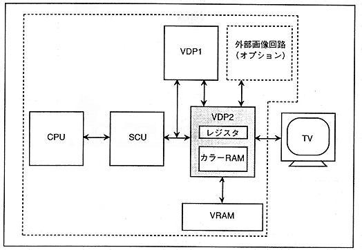

VRAM is connected to VDP2, and color RAM is built-in. Image data is defined in the VRAM and color RAM from the CPU via the SCU.
The data defined in VRAM is read according to the register settings and becomes the image data of each scroll screen. The image data of each scroll screen and the image data sent from VDP1 and the external image circuit are given display priority according to the register settings and become display image data. Furthermore, the display image data is converted into display color data and output to the TV (Figure 3.12).
Figure 3.12 VDP2 system configuration
